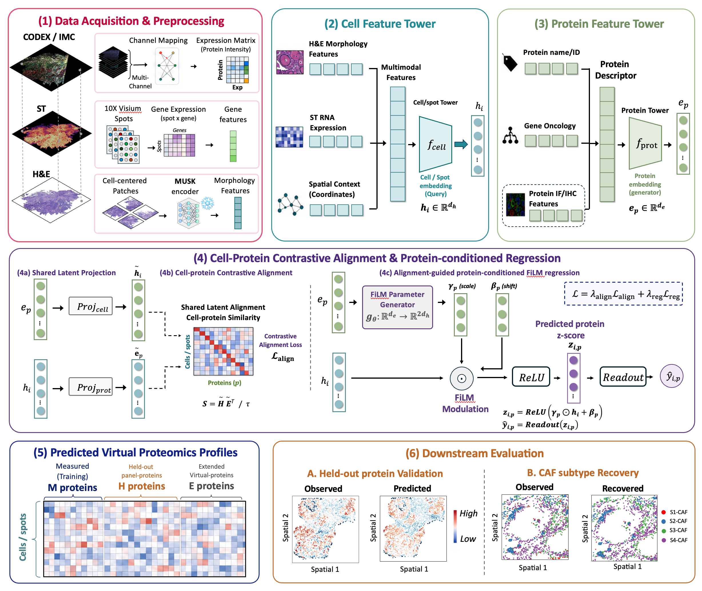

01
AI-driven virtual spatial proteomics via spatial transcriptomics and multimodal tissue imaging
Xiamen University · Tan Kah Kee Innovation Laboratory
Search and read the ProCLIP manuscript →
Question
Can missing protein channels be inferred from spatial transcriptomic profiles and tissue morphology?
My contribution
Developing multimodal generative models that integrate ISS, H&E histology, and imaging mass cytometry.
Status
Ongoing research with Prof. Mengsha Tong and Prof. Chaoyong Yang.
Key direction
Virtual spatial proteomic reconstruction for heterogeneity and cell-cell interaction analysis.
